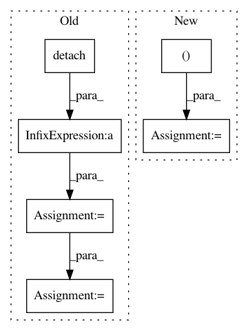

d7148f390db12a3f7e4b43ab584648b2e4a1882d,pyro/distributions/spanning_tree.py,SpanningTree,log_partition_function,#SpanningTree#,109
Before Change
// See https://en.wikipedia.org/wiki/Kirchhoff%27s_theorem
V = self.num_vertices
grid = make_complete_graph(V)
shift = self.edge_logits.detach().max()
edge_probs = (self.edge_logits - shift).exp()
adjacency = torch.zeros(V, V, dtype=edge_probs.dtype)
adjacency[grid[0], grid[1]] = edge_probs
adjacency[grid[1], grid[0]] = edge_probs
laplacian = adjacency.sum(-1).diag() - adjacency
truncated = laplacian[:-1, :-1]
try:
import gpytorch
log_det = gpytorch.lazy.NonLazyTensor(truncated).logdet()
After Change
// See https://en.wikipedia.org/wiki/Kirchhoff%27s_theorem
V = self.num_vertices
v1, v2 = make_complete_graph(V).unbind(0)
logits = self.edge_logits.new_full((V, V), -math.inf)
logits[v1, v2] = self.edge_logits
logits[v2, v1] = self.edge_logits
log_diag = logits.logsumexp(-1)
// Numerically stabilize so that laplacian has 1"s on the diagonal.
shift = 0.5 * log_diag
laplacian = torch.eye(V) - (logits - shift - shift[:, None]).exp()
truncated = laplacian[:-1, :-1]
try:
import gpytorch
log_det = gpytorch.lazy.NonLazyTensor(truncated).logdet()
In pattern: SUPERPATTERN
Frequency: 3
Non-data size: 6
Instances
Project Name: uber/pyro
Commit Name: d7148f390db12a3f7e4b43ab584648b2e4a1882d
Time: 2020-11-07
Author: fritz.obermeyer@gmail.com
File Name: pyro/distributions/spanning_tree.py
Class Name: SpanningTree
Method Name: log_partition_function
Project Name: Scitator/catalyst
Commit Name: f93beff338925cc1bf1b3ff1b32a2c440a4c9427
Time: 2020-04-21
Author: scitator@gmail.com
File Name: tests/_tests_scripts/z_mvp_mnist_gan.py
Class Name: CustomRunner
Method Name: _handle_batch